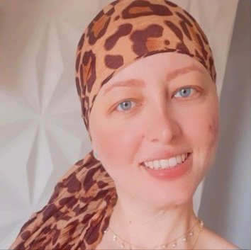

Conheça o Instituto

O Projeto Luz de Lô nasceu com a missão de ser um farol de apoio para pacientes em tratamento oncológico. Nosso foco é promover o bem-estar, a estética e a autoconfiança, elementos cruciais nessa jornada. A iniciativa é liderada com dedicação por Waldilene Aparecida Pagnan, mãe de Louise Caroline, e fortalecida pelo apoio inestimável de um grupo de voluntários.
Nossa atuação vai além do suporte prático. Buscamos disseminar conhecimento sobre a prevenção e detecção precoce do câncer de mama, oferecer assistência personalizada às necessidades de cada pessoa em tratamento, e incentivar atitudes positivas que favoreçam o sucesso terapêutico.
Para sustentar nossas ações, contamos com a solidariedade de empresas parceiras, que receberão nosso selo de "empresa amiga" (como os Amigos de Luz). Além disso, buscaremos recursos através de campanhas de captação monetária, bazares e venda de produtos exclusivos.
Missão
Acolher e transformar a vida de mulheres com câncer, por meio de acompanhamento psicológico, terapias e doações de tecidos, promovendo dignidade, força e esperança em cada etapa da luta.
Visão
Ser referência no acolhimento e apoio a mulheres com câncer em todo o Brasil, ampliando nosso alcance com empatia, cuidado e responsabilidade social.
Valores
Empatia: Olhar com o coração e entender a dor do outro.
Solidariedade: Estar presente com amor, atitude e prazer.
Respeito: Valorizar cada história com dignidade e cuidado.
Nossos Projetos
Lenços de Amor:
Lenços de Amor
O "Lenços de Amor" dedica-se à fabricação e doação de lenços e turbantes para mulheres em tratamento oncológico. Mais do que um acessório, cada peça busca elevar a autoestima e incentivar o autocuidado.
Bazar Solidário:
Bazar Solidário
Nosso Bazar Solidário arrecada fundos para manter as atividades do Instituto. Contamos com doações de parceiros como a C&A e transformamos tecidos em novas peças de vestuário.
Voluntários:
Voluntários
Somos impulsionados por uma equipe dedicada de 35 voluntários que atuam em diversas frentes, desde oficinas de costura até suporte emocional.
Costura Criativa:
Oficina de Costura
Criamos peças exclusivas como bolsas e necessaires a partir de materiais reaproveitados, gerando renda e estimulando a sustentabilidade.